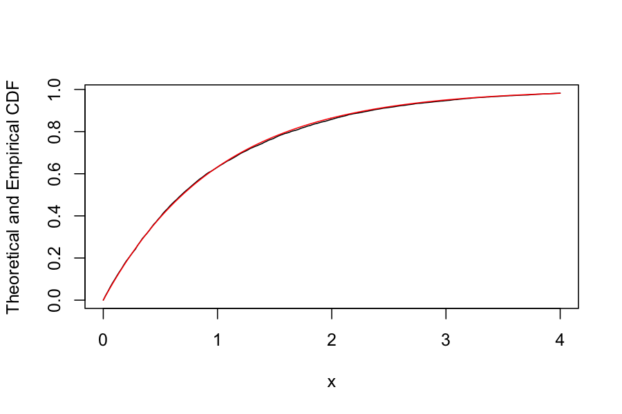

Agenda for today
True randomness vs. pseudo-randomness
Turning uniformly distributed random numbers into other distributions
Inverse method
Acceptance/rejection method
Reading:
True randomness: From nature
On computers: Everything deterministic, so we only have pseudo-random number generators
Functions that produce a sequence of numbers that have some of the same properties of a sequence of independent uniform random variables
They cannot have all of the properties of a sequence of independent uniform random variables
Issue tends to be independence rather than uniformity
e.g. the linear congruential generator
A generator, so it makes a sequence of numbers.
Start off with \(X_0\).
Define \(X_{n+1} = (aX_n + c) \text{ mod } m\)
lcg_sequence <- function(a=5, c=12, m=16, seed = 10, n_deviates = 20) {
sequence <- numeric(n_deviates)
sequence[1] <- seed
for(i in 2:n_deviates) {
sequence[i] <- (a * sequence[i-1] + c) %% m
}
return(sequence)
}
lcg_sequence()## [1] 10 14 2 6 10 14 2 6 10 14 2 6 10 14 2 6 10 14 2 6## [1] 4 0 12 8 4 0 12 8 4 0 12 8 4 0 12 8 4 0 12 8Small values of \(m\), \(a\), \(c\) give sequences with relatively small period (time before the sequence repeats).
One recommendation:
We have
A (pseudo) random number generator that provides us with independent, uniformly distributed random numbers
A probability distribution with CDF \(F\)
We want
Let
\[ F^{[-1]}(y) = \text{inf}\{x : F(x) \ge y\}, \quad y \in [0,1] \]
If \(F\) is strictly increasing, we have \(F^{[-1]} = F^{-1}\).
Intuition:
Suppose \(F\) strictly increasing, \(F^{-1}\) exists, \(U \sim \text{Unif}(0,1)\).
Then \(F^{-1}(U) \sim F\).
Why?
\[ \begin{align*} P(F^{-1}(U) \le x) &= P(F(F^{-1}(U)) \le F(x)) \\ &= P(U \le F(x)) \\ &= F(x) \end{align*} \]
And so the CDF of \(F^{-1}(U)\) is \(F(x)\)
Let \(F\) be the CDF of the target distribution, and let \[ F^{[-1]}(y) = \text{inf}\{x : F(x) \ge y\}, \quad y \in [0,1] \]
Draw \(U\) from\(\text{Unif}[0,1]\)
Take \(X = F^{[-1]}(U)\)
CDF for a random variable distributed exponential with rate 1:
\[ F(x) = 1 - e^{-x} \]
\[ F^{[-1]}(u) = -\log(1 - u) \]
\(F\) is strictly increasing and continuous, so just check that \(F(F^{-1}(u)) = u\).
Algorithm:
Generate \(U \sim \text{Unif}[0,1]\)
Take \(X = - \log(1 - U)\)
Note: We can also take \(X = -\log(U)\). Why?
Let’s check:
generate_exponential <- function() {
U <- runif(1)
X <- -log(1 - U)
return(X)
}
random_exponentials <- replicate(n = 10000, generate_exponential())
grid <- seq(0,4, length.out = 200)
plot(sapply(grid, function(g) mean(random_exponentials <= g)) ~ grid, type = 'l',
ylab = "Theoretical and Empirical CDF", xlab = "x")
points(pexp(grid) ~ grid, type = 'l', col = "red")
We would like to sample uniformly from the set \(\{1,2,\ldots, n\}\)
CDF: \[ F(x) = \begin{cases} 0 & x < 0\\ \frac{\lfloor x \rfloor}{n} & x \in [0,n]\\ 1 & x > n \end{cases} \]
Inverse: \[ \begin{align*} F^{[-1]}(u) &= \text{inf} \{ x : F(x) \ge u\} \\ &= \begin{cases} -\infty & u = 0 \\ 1 & u \in (0, 1/n] \\ 2 & u \in (1/n, 2/n] \\ \vdots & \vdots \\ n & u \in ((n-1)/n, 1] \end{cases} \end{align*} \] Not including the points \(1/n, 2/n, \ldots, (n-1)/n\), this is equal to \(\lfloor nu \rfloor + 1\).
Let’s check:
Problem setup:
We want to sample a random variable with pdf \(f\).
We have a probability density \(g\) and a constant \(c\) such that \(f(x) \le c g(x) = h(x)\) for all \(x\).
Sample \(U \sim \text{Uniform}[0,1]\) and \(Z \sim g\)
If \(U \le \frac{f(Z)}{ c g(Z)}\), return \(Z\)
Otherwise, return to 1
Probability of generating an accepted value in \((x, x + dx)\) is proportional to \[ g(x) dx \frac{f(x)}{h(x)} = \frac{1}{c} f(x) dx \]
\(g(x)\) gives the probability of proposing something in \((x, x + dx)\)
\(f(x) / h(x)\) is the probability of accepting the proposal
Overall idea: Think of \(g\) as approximating \(f\), and \(f(x) / h(x)\) as describing how well \(g\) approximates \(f\) at \(x\). We accept more of the time when \(f(x) / h(x)\) is large.
Notes
The expected fraction of accepted samples is \(1/c\)
Therefore, should make \(c\) as small as possible
\(f\) doesn’t have to be a normalized density
We want \(X\) with density \[ f_X(x) = \frac{2}{\sqrt{2\pi}} e^{-x^2 / 2}, \quad x \ge 0 \]
Let \(g(x) = e^{-x}\), \(x \ge 0\) (exponential with rate 1)
Let \(c = \sqrt {2e / \pi} \approx 1.32\) (obtained by finding the maximum of \(f_X(x) / g(x)\))
Overall algorithm:
Generate \(Z \sim \text{Exp}(1)\)
Generate \(U \sim \text{Unif}(0,1)\)
If \(U \le \frac{f_X(Z)}{ c g(Z)} = \frac{2}{\sqrt{e}}\exp(-Z^2 / 2 + Z)\), return \(Z\)
Let’s check:
Why might we want to do this?
Maybe we actually want half normals.
Can use half normals to make standard normals, standard normals to make arbitrary normals.
For simulation, we tend to use pseudo-random number generators
Pseudo-random number generators target a uniform distribution
Many methods for generating random numbers from other distributions
Inverse method for when you have the CDF and it is easy to invert
Accept/Reject for more complicated distributions, and for which you don’t know or want to compute the normalizing constant.